猫咪禁忌食品
以下食品对猫咪有不同程度危害，日常喂养一定要避开。误食后出现异常，请立即联系宠物医院。
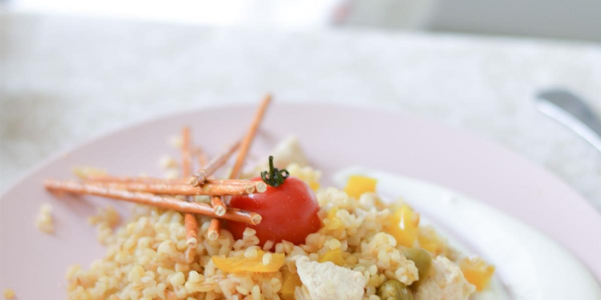
最常见的十种
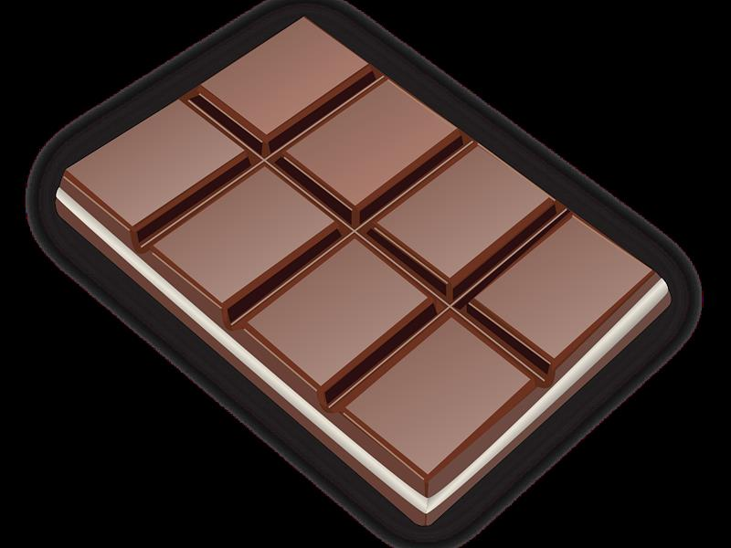
巧克力高危
可可碱与咖啡因，可致呕吐、抽搐、心律失常。
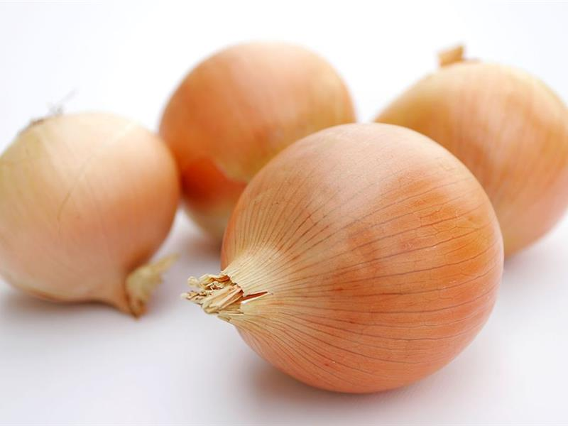
洋葱高危
硫化物会破坏红细胞，引发溶血性贫血。
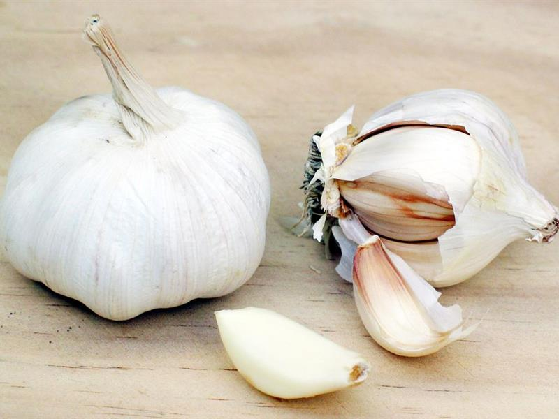
大蒜高危
与洋葱同属葱属，少量长期摄入也可能中毒。
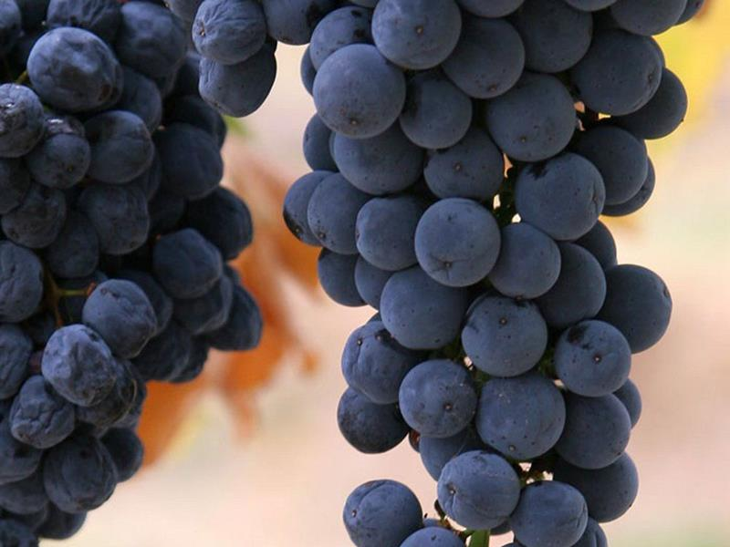
葡萄 / 葡萄干高危
可引发急性肾衰竭，少量也可能中毒。
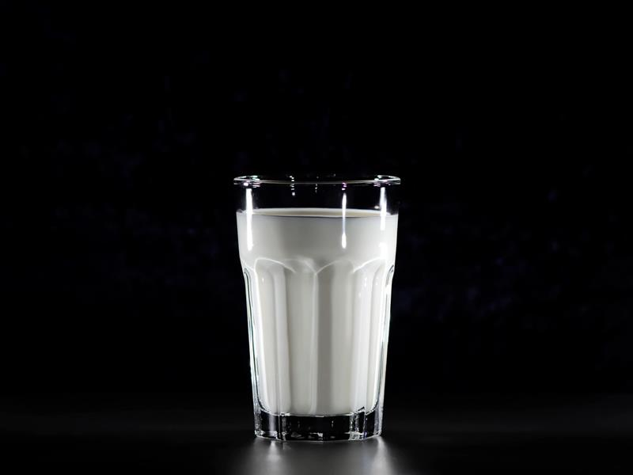
牛奶 / 乳制品中危
多数猫乳糖不耐受，容易腹泻。
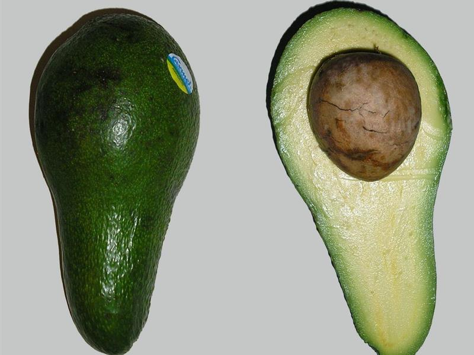
牛油果中危
含 Persin，可致呕吐、腹泻、心肌损伤。
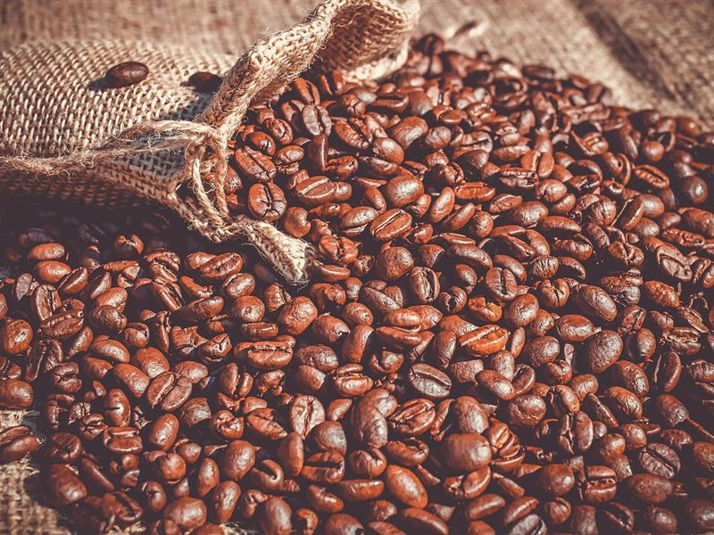
咖啡因饮料高危
心悸、过度兴奋、肌肉震颤。
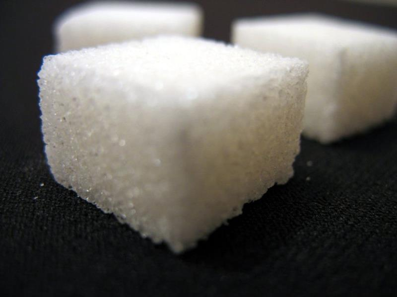
木糖醇 / 甜味剂高危
常见于口香糖、烘焙食品，可致低血糖与肝损伤。
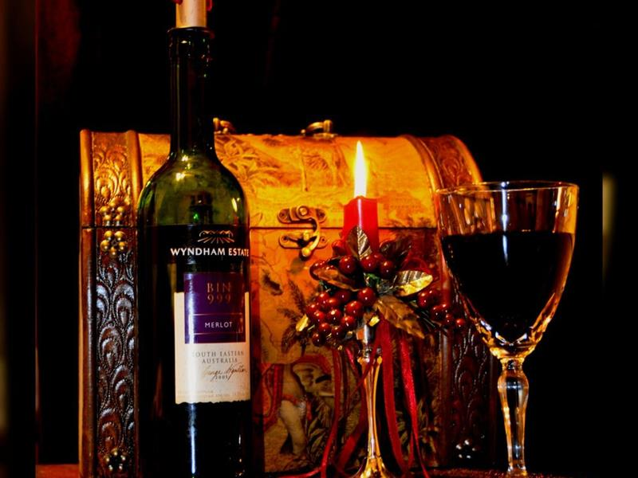
酒精饮品高危
可致中毒、昏迷、呼吸衰竭。
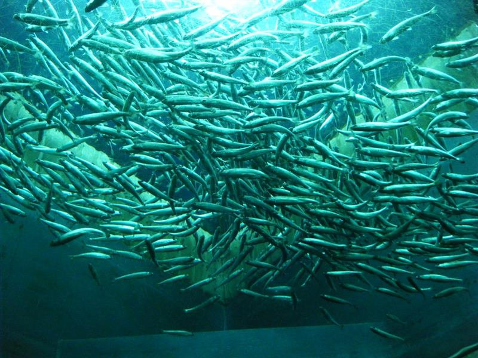
生鱼 / 生肉中危
寄生虫与细菌风险，长期生食还可能缺乏维生素 B1。
完整清单
| 食品名称 | 有害成分 | 对猫咪的危害 | 危险程度 |
|---|---|---|---|
| 巧克力 | 可可碱、咖啡因 | 呕吐、腹泻、抽搐、心律失常，严重可致死 | 高 |
| 洋葱 / 大蒜 | 硫化物 | 破坏红细胞，引发溶血性贫血 | 高 |
| 葡萄 / 葡萄干 | 成分不明 | 急性肾衰竭，少量即可中毒 | 高 |
| 木糖醇 | 木糖醇 | 低血糖、抽搐、肝损伤 | 高 |
| 酒精饮品 | 乙醇 | 中毒、昏迷、呼吸衰竭 | 高 |
| 咖啡因饮料 | 咖啡因 | 心悸、过度兴奋、肌肉震颤 | 高 |
| 牛奶 / 乳制品 | 乳糖 | 多数猫咪乳糖不耐受，引发腹泻 | 中 |
| 生鱼 / 生肉 | 寄生虫、细菌 | 寄生虫感染、维生素 B1 缺乏 | 中 |
| 牛油果 | Persin | 呕吐、腹泻、心肌损伤 | 中 |
| 煮熟的骨头 | 碎骨 | 划伤消化道、造成窒息 | 中 |
如果猫咪不慎误食以上食品，请立即联系宠物医院，不要自行催吐，也不要把人类的止吐药喂给猫。
误食后的三件事
- 记住吃了什么、吃了多少：把包装或剩余食物一起带去，医生判断剂量会快很多。
- 记录时间：误食时间、第一次出现症状的时间，对治疗很关键。
- 不要自行催吐：有些腐蚀性物质催吐会造成二次伤害，交给医生处理。